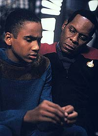
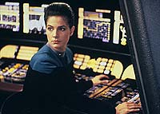
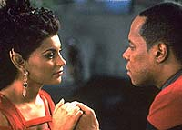
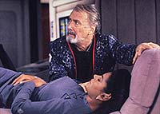
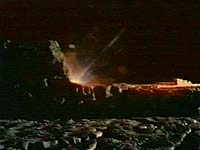

MANCHETE
DO EPISDIO
Histria
traz romance bizarro e
sem consequncias para Sisko
Episdio
anterior | Prximo
episdio
Sinopse:
Data Estelar: 47329.4.
Na noite do quarto aniversrio de
morte de sua esposa, Jennifer Sisko, o comandante Sisko se
encontra, no Promenade, com uma deslumbrante mulher aliengena de
vestido vermelho chamada Fenna. Encantado, Sisko se vira e no
momento seguinte Fenna no est mais l.
Na manh seguinte, Sisko e Dax se encontram com um brilhante (e
megalomanaco) terraformador, professor Gideon Seyetik, em visita
a DS9 para finalizar os ltimos preparativos do seu mais
ambicioso projeto: a reignio de uma estrela morta.
A nave estelar USS Prometheus est atracada em DS9 e designada
para esta importante misso. noite, Fenna aparece novamente no
Promenade e Sisko e ela conversam e novamente ela desaparece,
justamente quando Sisko tentava obter algo mais concreto sobre
ela.

No
dia seguinte, Sisko pede ajuda a Odo para que ele o ajude a
encontrar Fenna. noite, em um jantar a bordo da Prometheus,
Sisko conhece a esposa de Seyetik, Nidell, absolutamente idntica
a Fenna.
Sisko diz a Odo sobre o ocorrido, Odo diz no entender, pois
ningum deixou a Prometheus, alm de Seyetik. Sisko volta ao seu
quarto e encontra Fenna. Quando ele a confronta com o ocorrido ela
fica muito nervosa e desaparece na frente dos olhos de Sisko.
A bordo da Prometheus, em rota para epsilon 119, Fenna aparece
novamente para Sisko. Sisko a leva aos aposentos de Seyetik, onde
ele encontra Nidell, aparentemente em estado de coma.
Seyetik explica que sua esposa tem habilidades telepticas que a
fazem projetar imagens quando em momentos de grande transtorno
emocional. Isto j aconteceu antes e Nidell quase morreu naquela
ocasio. Os da raa de Nidell se casam para toda a vida, por
mais infeliz que Seyetik a faa e por mais vontade que ela tenha
de deix-lo, ela no o faria jamais.
Sisko acaba por convencer Fenna que tudo entre eles no passa de
uma espcie de sonho de Nidell, um do qual Nidell nunca se
lembrar.

Dax
chama Sisko da ponte, Seyetik lanou a capsula de reignio
estelar com o prprio a bordo. Sisko entende que Seyetik quer se
matar para libertar Nidell e tenta convenc-lo a desistir pelo
comunicador, mas intil.
A reignio um sucesso, um tributo a um homem brilhante.
Quando os primeiro raios da nova estrela entram na ponte da nave,
Fenna desaparece lentamente.
Nidell, que no se lembra de nada do que aconteceu entre Sisko e
Fenna, d adeus ao comandante e parte para o seu planeta natal.
Comentrios:
Aps "Necessary
Evil", semana passada, a boa lgica ditava que uma
queda de qualidade era esperada, mas acho que erraram na mo:
isto muito ruim. Se realmente eles queriam fazer Sisko se
envolver com algum, este algum no poderia ser (pelo menos)
de carne e osso?

A
utilizao do quarto aniversrio da morte de Jennifer para
externar a histria, usando o atual estado esprito de Sisko, e
preceder o encontro com Fenna soa totalmente falsa. Tais
"coincidncias" funcionam apenas quando esto ligadas
a um comentrio sobre "destino". Como apresentada aqui,
especialmente por no termos um fechamento do tema ao final do
episdio, simplesmente escrita pobre.
bvio que, em um certo momento de sua vida, Sisko teria que
comear a "ver" outras pessoas e teria problemas a
resolver quanto a isto: a memria de Jennifer, uma certa
"ferrugem", como esta pessoa se encaixa no
relacionamento dele com Jake etc. Por isto eu no consigo aceitar
que Sisko fique to (INSTANTANEAMENTE) envolvido por uma
"dama de
vermelho" que aparece como por um passe de mgica ao final
de um dia de trabalho.
Ainda mais quando, esta misteriosa "dama" no parece
saber nada sobre nada (nem sobre ela) e adora enaltecer o bvio.
extremamente tedioso assistir dupla Sisko e Fenna em pouco
inspirados dilogos, esticados at a morte. A falta de qumica
entre os dois impressionante, com direito a um embaraoso
beijo.
Para terminar, existe ainda um absurdo ngulo Sci-Fi na trama,
que a transforma em uma anedota do seguinte calibre:
"variante Sci-Fi do crime de adultrio, sem traio e com
'reset-button' includo gratuitamente no pacote".
No era melhor utilizar Seyetik, Sisko e Nidell e "fazer
moda antiga"? Do jeito que o episdio se apresenta, ELE NO
FAZ O MENOR SENTIDO!
Uma outra forma de dizer isto seria: se eu pudesse dar uma nota de
0 a 10 sobre a coragem do episdio em tomar riscos e ser
audacioso ele receberia -1000!

A
trama do episdio, apesar do inglrio trabalho de levar esta
tola histria frente, no tem tantos furos assim, apesar de
ser bastante bvia. Alguns problemas: como Seyetik conseguiu
entrar na cpsula? Onde estavam o capito e o mdico da
Prometheus?
Alguns bons momentos espalhados: as cenas entre Ben e Jake, apesar
da descrio do sonho de Jake ser um pouco bvia; as cenas
entre Ben e Jadzia, cuja dinmica j se mostra bastante
amadurecida, formando a partir da, mais uma excelente dupla na srie;
Bashir simpatizando com Seyetik --e todo mundo olhando para ele em
seguida E Kira e Sisko falando sobre "trocas de favores em
encontros sociais oficiais".
A coisa que realmente salvou o episdio de ser um desastre total
foi a presena do egomanaco Seyetik. Ele do tipo de cara que
escreve (LITERALMENTE) o prprio obiturio, por se recusar a dar
a outra pessoa tarefa to importante. Ele arrogante e tem
conscincia disso, seu ltimo ato acaba por demonstrar que havia
muita mais por baixo de toda aquela impfia, que uma primeira
olhada poderia vislumbrar.
A direo de Alexander Singer foi boa, com ngulos de cmera no-usuais,
tanto nas tomadas dos atores quanto nas da estao.
O elenco regular esteve muito bem, dentro do esperado, talvez
Brooks tenha pisado um pouco na bola em certos momentos, com uma
atitude meio de "sonolento interessado" (ou de
"interessado sonolento", dependendo do ponto de vista).
Richard Kiley foi timo, a nica real fonte de energia deste aptico
episdio, se saindo bem at com prolas como "que se faa
a luz", pouco antes de Seyetik morrer. Salli Elise Richardson
se saiu MUITO mal, tanto como Fenna quanto como Nidell, talvez um
pouco menos artificial e comatosa como Nidell. Mark Erickson foi
um extra com algumas falas.

Eu
no tenho muita certeza sobre o processo de "reignio
estelar" de Seyetik, bem como no sei se a superfcie da
estrela morta foi descrita adequadamente pela equipe de efeitos
visuais.
"Second Sight" um outro exemplo de
"romance trekker da semana", um personagem regular e um
convidado devem, no espao de uma hora de televiso e com a
usual falta de qumica dos envolvidos e da arbitrariedade das
situaes apresentadas: "se encontrar", "se
apaixonar", "se separar --sob circunstncias que
usualmente esto ligadas a um 'reset-button'" e "se
despedir para nunca mais ouvirmos falar de nada disto".
Citaes
Seyetik - "--and, of
course, it doesn't hurt to be a raging egomaniac."
("--e, claro, no custa ser um entusiasmado egomanaco.")
Dax - "I thought the theoretical maximum for those engines
was warp 9.5."
("Eu pensei que o mximo terico para esses motores fosse
Dobra 9.5.")
O'Brien - "It was."
("Era.")
Trivia:
 Presena de Richard Kiley como Gideon
Seyetik. Richard Paul Kiley (nascido em 31 de maro de 1922 em
Chicago, Illinois, EUA -- falecido em 5 de maro de 1999 em
Warwick, New York, EUA) trabalhou em filmes como: "The Little
Prince", "Looking for Mr. Goodbar", "Jurassic
Park", "Patch Adams", "Phenomenon",
"Howard the Duck", "Endless Love", "The
Canterville Ghost" etc. Entre tantas participaes em TV eu
posso destacar o seu papel como o pai de Jill Brook (personagem de
Kathy Baker) em "Picket Fences". Incrvel ator de
teatro, ganhou um Tony (o oscar do teatro) pelo papel de Don
Quixote em "Man Of La Mancha" e tambm Emmys (o Oscar
da TV) por "The Thorn Birds" e "A Year in the
Life".
Presena de Richard Kiley como Gideon
Seyetik. Richard Paul Kiley (nascido em 31 de maro de 1922 em
Chicago, Illinois, EUA -- falecido em 5 de maro de 1999 em
Warwick, New York, EUA) trabalhou em filmes como: "The Little
Prince", "Looking for Mr. Goodbar", "Jurassic
Park", "Patch Adams", "Phenomenon",
"Howard the Duck", "Endless Love", "The
Canterville Ghost" etc. Entre tantas participaes em TV eu
posso destacar o seu papel como o pai de Jill Brook (personagem de
Kathy Baker) em "Picket Fences". Incrvel ator de
teatro, ganhou um Tony (o oscar do teatro) pelo papel de Don
Quixote em "Man Of La Mancha" e tambm Emmys (o Oscar
da TV) por "The Thorn Birds" e "A Year in the
Life".
Seyetik usou protomatria em seu
experimento. Protomatria tambm foi utilizada no projeto
Genesis como descrito em "Jornada nas Estrelas III -
Procura de Spock". Este ponto nasceu de uma idia antiga
dos produtores de Deep Space Nine de usar o dispositivo
Genesis para recuperar parte do terreno devastado de Bajor.
A histria originalmente seria a de
um relacionamento para Bashir baseada no filme de 1948,
"Portrait Of Jennie".
Este episdio destri a regra dos
tempos da Nova Gerao que diz que 1000 datas estelares
equivalem a um ano.
A referncia ao
poema "A queda de Kang" (uma referncia ao Klingon Kang
do episdio da terceira temporada da srie original "Day
Of The Dove") levou a algumas "dvidas" (tpicas
de Jornada) quando no episdio "Blood Oath",
desta mesma temporada, nos encontramos novamente com o personagem.
Ficha
tcnica:
Histria de Mark
Gehred-O'Connell
Roteiro de Mark Gehred-O'Connell e Ira Steven Behr
& Robert Hewitt Wolfe
Direo de Alexander Singer
Exibido em 22/11/1993
Produo: 029
Elenco:
Avery Brooks como
Benjamin Lafayette Sisko
Ren Auberjonois como Odo
Nana Visitor como Kira Nerys
Colm Meaney como Miles Edward O'Brien
Siddig El Fadil como Julian Subatoi Bashir
Armin Shimerman como Quark
Terry Farrell como Jadzia Dax
Cirroc Lofton como Jake Sisko
Elenco convidado:
Salli Elise Richardson como Fenna e
Nidell
Richard Kiley como Seyetik
Mark Erickson como tenente Piersall